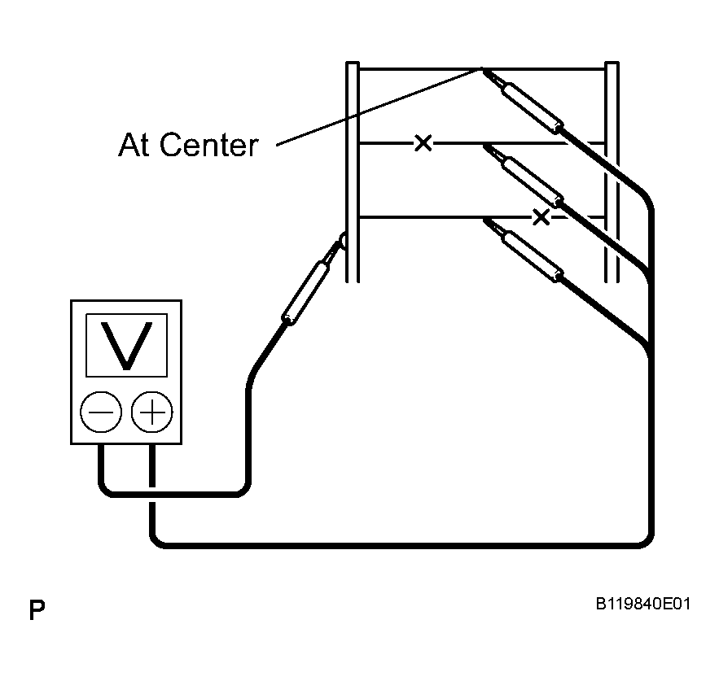

On-Vehicle Inspection
- INSPECT BACK DOOR GLASS (DEFOGGER WIRE) NOTE:
- When cleaning the glass, wipe the glass along the wire using a soft, dry cloth. Take care not to damage the defogger wires.
- Do not use detergents or glass cleaners that have abrasive ingredients.
- When measuring voltage, wrap a piece of tin foil around the tip of the negative (-) tester probe and press the foil against the wire with your finger, as shown in the illustration.
- Turn the ignition switch ON.
- Turn the defogger switch ON.
- Measure the voltage at the center of each defogger wire as shown in the illustration.
Standard voltage
VOLTAGE REFERENCEVoltage Criteria Approx. 5 V Wire is not broken Approx. 10 or 0 V Wire is broken 
Courtesy of © TOYOTA, LICENSE AGREEMENT TMS1002HINT:
If there is approximately 10 V, the wire may be faulty between the center of the wire and the wire end on the battery side. If there is no voltage, the wire may be faulty between the center of the wire end and the wire end on the ground side.
- Place the voltmeter's positive (+) lead against the defogger wire on the battery side.
- Place the voltmeter's negative (-) lead with the foil strip against the wire on the ground side.
- Slide the positive (+) lead from the battery side to the ground side.
- The point where the voltage drops from approximately 10 V to 0 V is where the defogger wire is broken.
HINT:
If the defogger wire is not broken, the voltmeter indicates 0 V at the positive (+) end of the defogger wire and gradually increases to approximately 12 V as the meter probe moves to the other end.